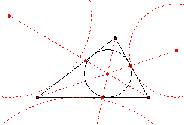

Определение 1: Окръжност, която се допира до страните на триъгълника АBC, се нарича вписана окръжност в триъгълника.
|  |
| фигура 1. |
T1: Ъглополовящите на вътрешните ъгли в триъгълника се пресичат в една точка, която е центърът на окръжността.
T2: Във всеки триъгълник може да се впише единствена окръжност, центърът й е пресечната точка на ъглополовящите на ъглите из триъгълника.